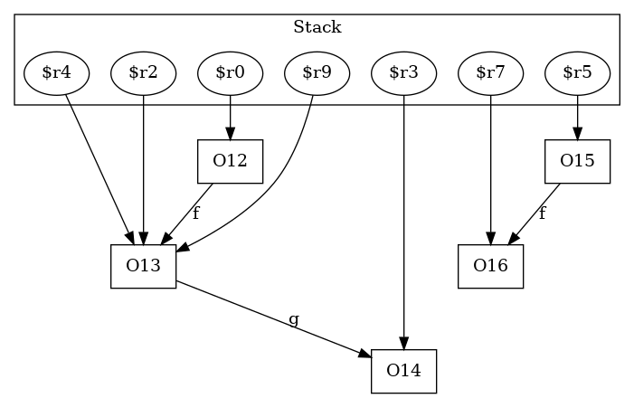

12 : $r0 = new Node
12 : specialinvoke $r0.|Node: void |init|()|()
13 : $r2 = new Node
13 : specialinvoke $r2.|Node: void |init|()|()
13 : $r0.|Node: Node f| = $r2
14 : $r4 = $r0.|Node: Node f|
14 : $r3 = new Node
14 : specialinvoke $r3.|Node: void |init|()|()
14 : $r4.|Node: Node g| = $r3
15 : $r5 = new Node
15 : specialinvoke $r5.|Node: void |init|()|()
16 : $r7 = new Node
16 : specialinvoke $r7.|Node: void |init|()|()
17 : $r5.|Node: Node f| = $r7
18 : $r9 = $r0.|Node: Node f| ->class soot.jimple.internal.JAssignStmt {Left: class soot.jimple.internal.JimpleLocal, Right: class soot.jimple.internal.JInstanceFieldRef}
18 : staticinvoke |Test: void bar(Node,Node)|($r9, $r5)
19 : $r10 = $r5.|Node: Node f|
19 : return $r10
